01Tour · Experience
Tour
和歌山・紀美野町の体験ツアー
2026 Autumn和歌山県紀美野町の山を舞台に、狩猟と天文台の星空と焚火をたどるツアーを設計しています。獣害という地域の課題を、来た人が体で分かる体験に変えたいと思っています。情報が絶えず流れ込んでくる日常から一度離れて、本来そなわっているはずの人間らしい感覚を取り戻す。そういうリトリートとしての時間を届けたいと考えています。
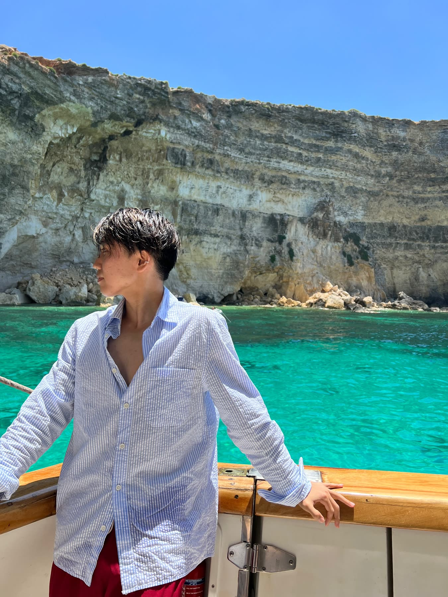
Scroll
Message from Noah
You Only Live Once
Entrepreneur · Wakayama, Japan
一度きりの
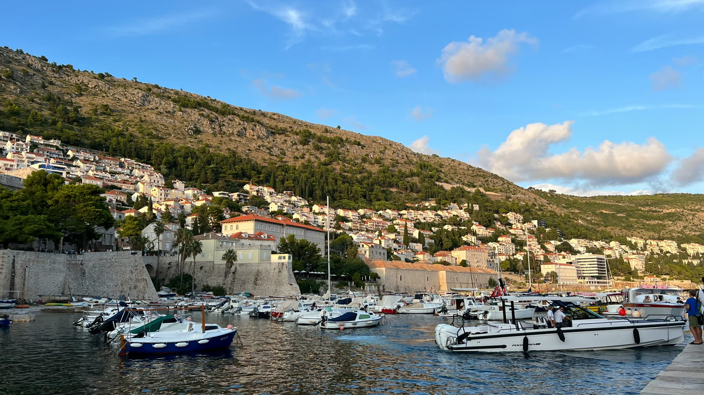
02Business
ロンドンで
和歌山・紀美野町の体験ツアー
Web・ブランディング
音楽と食の夜
Web3・ワイン
70年続いた家業
ロンドン発・おにぎりブランド
ロンドンから和歌山まで、すべての事業を見る
03Photo
30か国を回るあいだに撮りためた写真から。
毎日が、人生の夏休み。
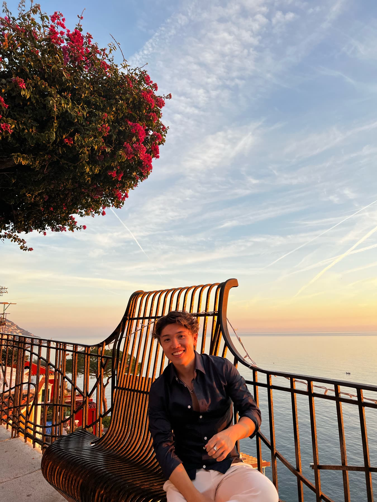
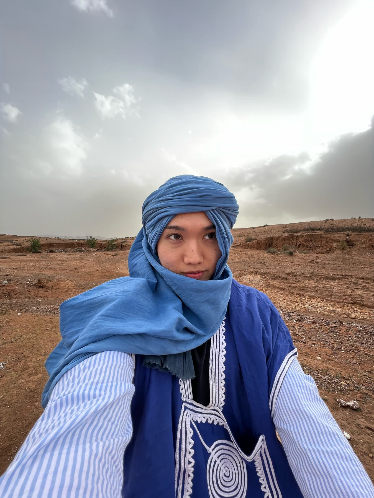
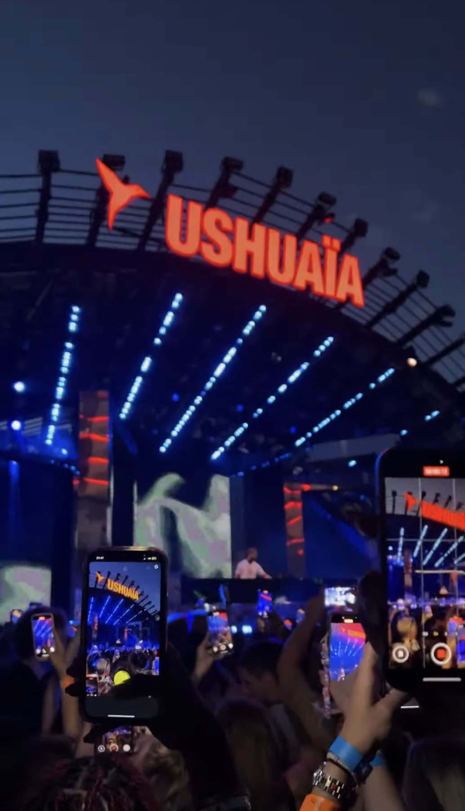
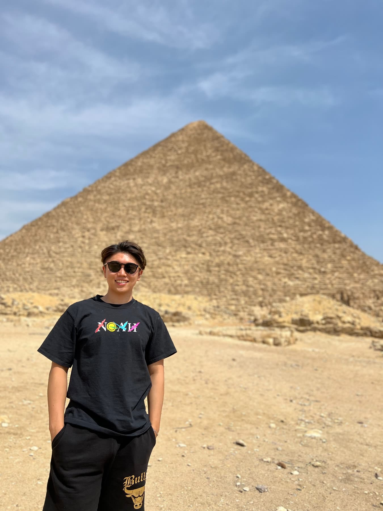
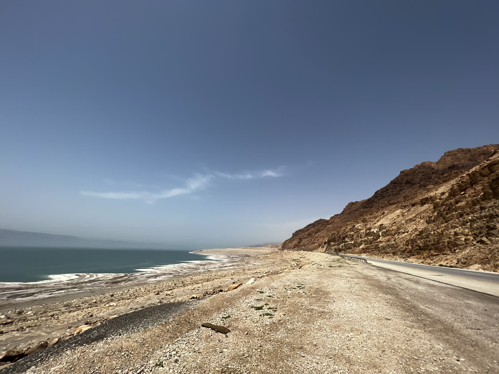
自分で人生の選択に責任を持ち、全力で毎日を楽しむ。
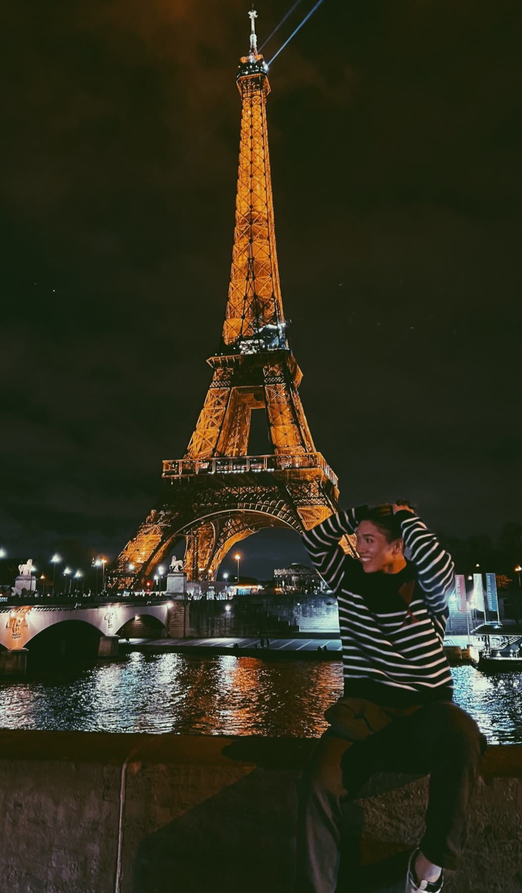
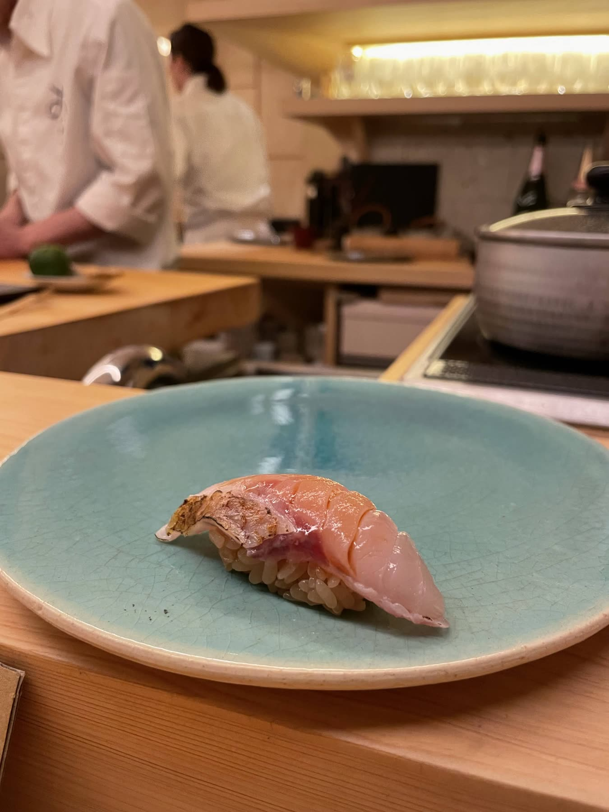
旅先で撮った写真を、もっと見る
04Blog · note
事業のこと、旅のこと、日々考えていることをnoteに書いています。
仕事の相談も、旅の話も、気軽にどうぞ。
Scroll
About MeBorn 1999 · Keio · London · Wakayama
はじめまして、NOAHです。
自分で人生の選択に責任を持ち、全力で毎日を楽しむことを大切にしています。
曽祖父が約70年前に創業した会社を継ぎ、体験ツアー・デザイン・イベントの3事業を
立ち上げています。
和歌山を
01Values
一日24時間は誰にとっても等しく、それを何に使うかだけが自分次第だと思っています。だから時間や場所に縛られずに働ける形へ事業を組み立て、好きなことに全力を注いできました。道を選ぶときは、いつも直感に従うようにしています。
人生は人と人とのご縁でできていると思っています。旅先での一度きりの立ち話が仕事になったり、地元の誰かの一言で進む道が変わったり。そうした偶然に何度も助けられてきたので、人とのつながりは何より大事にしています。
ゼロから何かを立ち上げる瞬間が、いちばん面白いと感じます。うまくいく保証がなくても、心がわくわくする側を毎回選ぶようにしています。
周りにいる人が幸せそうにしているときが、自分にとっていちばん豊かな時間です。住む場所もやることも、そうなるほうを選んできました。
02Career
兵庫県尼崎市に生まれる。幼少期はキッズモデルとして活動。
和歌山県で小中高時代を過ごす。
慶應義塾大学 商学部に入学。マーケティング・マネジメントを学ぶ。
イギリス大学院に進学。在学中に当時ロンドン市内初のおにぎり専門店を起業。
レバレジーズ株式会社に就職。SaaS新規事業の営業で契約ギネスを更新。
地元・和歌山に戻って家業を継ぐ。ツアー・デザイン・イベントの3事業を立ち上げ中。
Business · Projects
どの
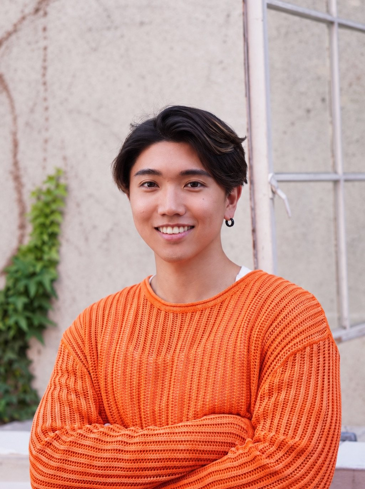
和歌山・紀美野町の体験ツアー
2026 Autumn和歌山県紀美野町の山を舞台に、狩猟と天文台の星空と焚火をたどるツアーを設計しています。獣害という地域の課題を、来た人が体で分かる体験に変えたいと思っています。情報が絶えず流れ込んでくる日常から一度離れて、本来そなわっているはずの人間らしい感覚を取り戻す。そういうリトリートとしての時間を届けたいと考えています。
ブランド・クリエイティブ制作
Openサイト、ロゴ、名刺、ブランドガイドラインまで、一貫したデザインで制作しています。大切にしているのは、デザインに入る前にお客さまの事業や想いをしっかり伺うこと。海外で培った感性と基準を、日本の事業に合わせて形にしています。
音楽と食のイベント
音楽と食を軸にした夜の集まりを企画しています。クルーザーでDJをしたり、同じ食卓を囲んだり。形はそのつど変わりますが、やりたいことは一つで、来た人どうしがその場でつながっていくコミュニティを育てることです。回を重ねるほど濃くなる場にしたいと思っています。
Web3プロジェクトへの投資・参画
Web3のプロジェクトに、長い時間軸で資本と時間を置いています。インフラ、カルチャー、立ち上がったばかりのコミュニティ。短期の値動きを追うより、構造そのものが変わる側に賭けたいと思っています。
ワイン投資
ワインを資産として持っています。一本を囲む時間が好きだという個人的な理由から入って、いまは長く置くほど価値が動く対象として扱っています。好きなものと理屈が重なる場所は、判断がぶれにくいと思っています。
70年続いた家業を継ぐ
曽祖父が70年前に和歌山で創業した会社を、いま自分の代で引き継いでいます。積み上がった信用と地元の関係を土台にして、事業の中身のほうを作り替えているところです。
ロンドン発・おにぎりブランド
2022 — 2024日本のソウルフードを手作りのまま届けたくて、異国の地で起業しました。現地でのイベント出店やブランドとのタイアップを重ね、当時ロンドンで初となるおにぎり専門店の出店に至りました。
noteでの発信
AIの使い方からマインドセットなど、実際に試したことをそのまま書いています。あわせて、日々の中で考えたことや感じたことも、飾らずに残しています。
Photo · 30 Countries
30か国を回るあいだに撮りためた写真を並べています。
SCROLL →
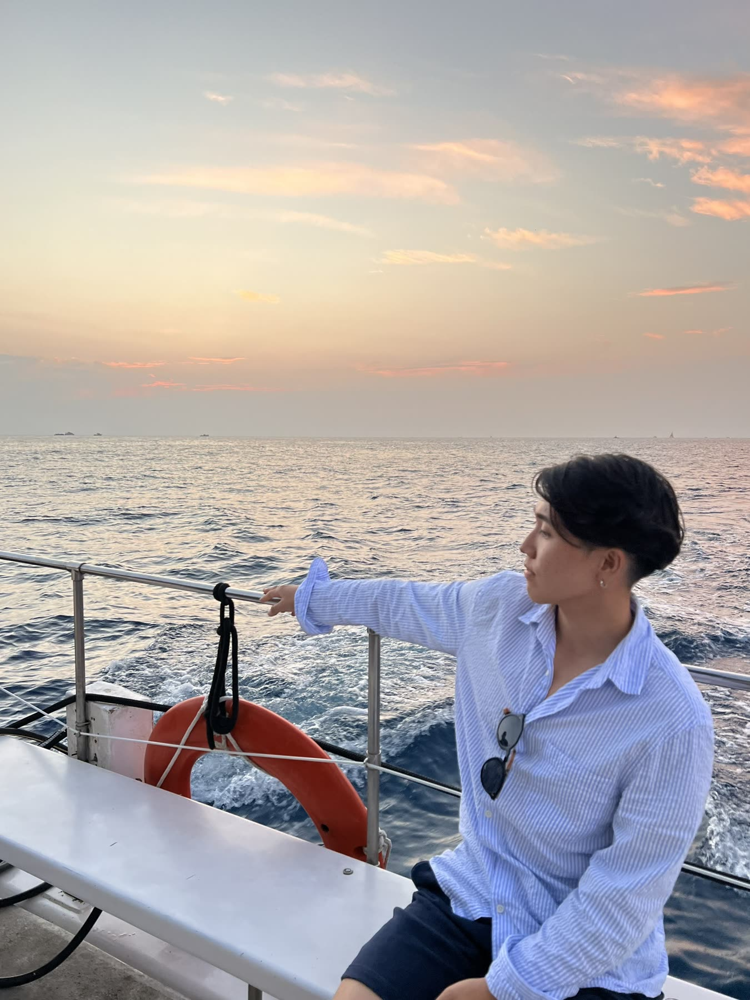
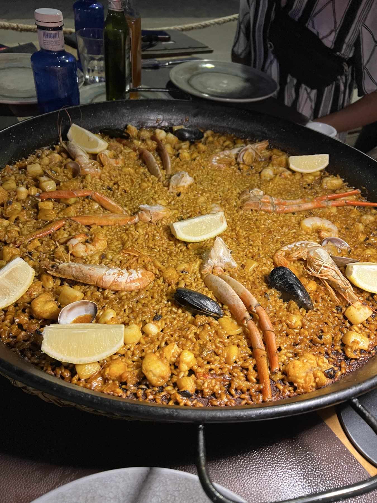
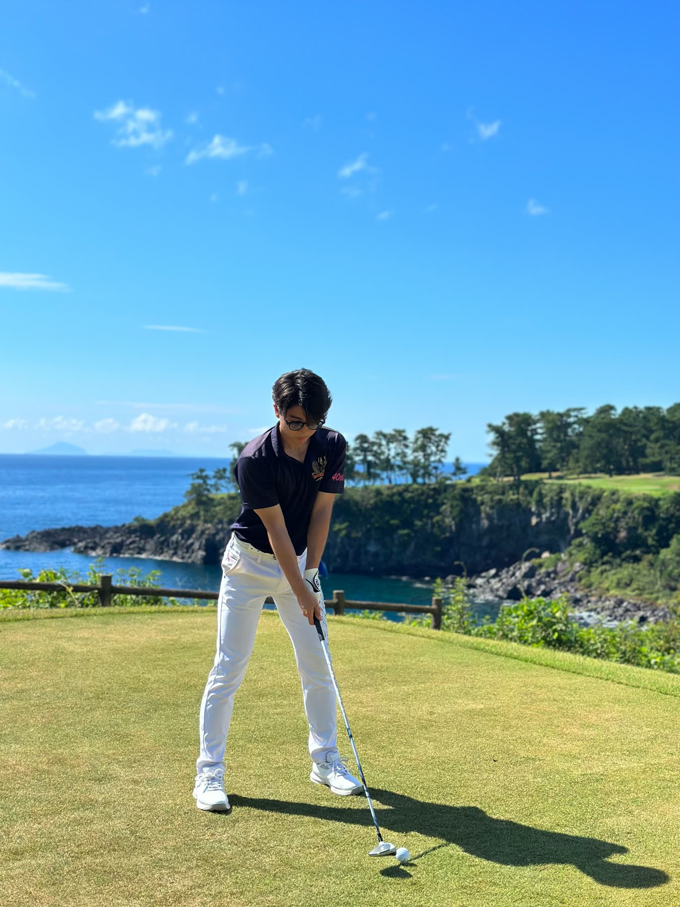
Thoughts & stories
事業のこと、旅のこと、日々考えていることを書いています。
数多くの起業家や経営者と出会う中で見えてきた、成功する人に共通するもの。それは才能でも運でもなく、日々の在り方だった。
Read on note →気づいたら、会場の中で僕達のストールに一番長い列ができていた。「動いた人間の周りには、必ず助けてくれる人が現れる」。異国の地でゼロから事業をつくって、そう確信した。
Read on note →僕の人生の節目には必ず、誰かの存在があった。一つのご縁が、何年も先の自分を支えることがある。だからこそ、目の前の一人一人と、丁寧に向き合いたい。
Read on note →崖の上から眺めた夕日。眼下に広がる紺碧の海、橙に染まる空。その瞬間、僕は「成功」という言葉の意味を問い直した。お金でも肩書きでもない、この瞬間に立っていられること。それが豊かさの正体。
Read on note →Contact
お仕事のご相談、一緒に何か始めたいというお話、旅の話まで、どんなきっかけでも嬉しいです。お気軽にご連絡ください。
02メッセージを送る